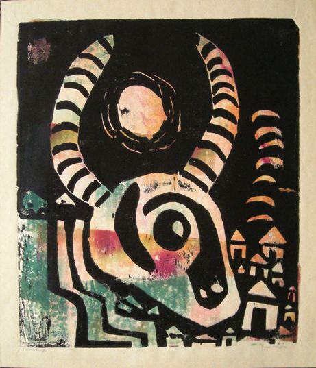
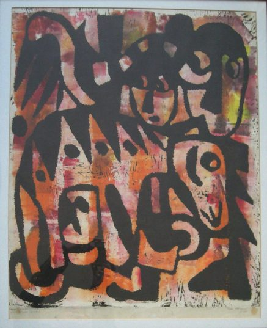
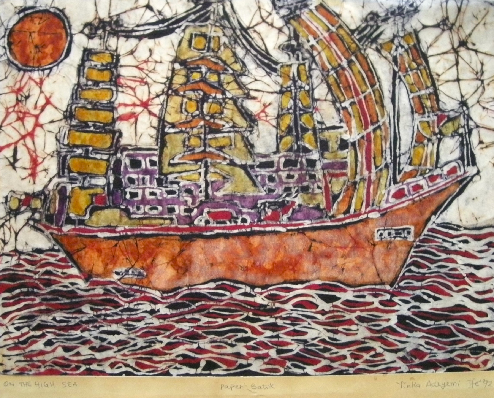
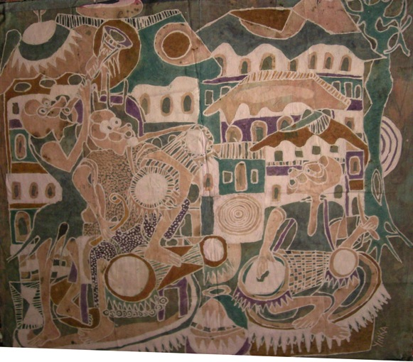
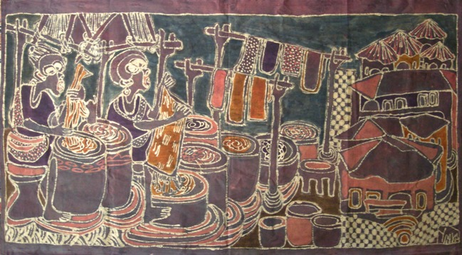
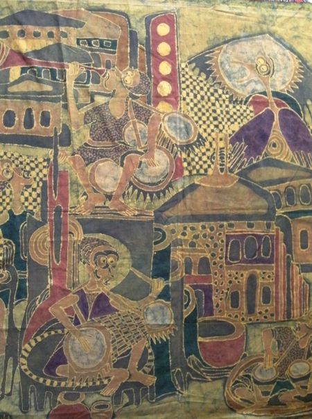
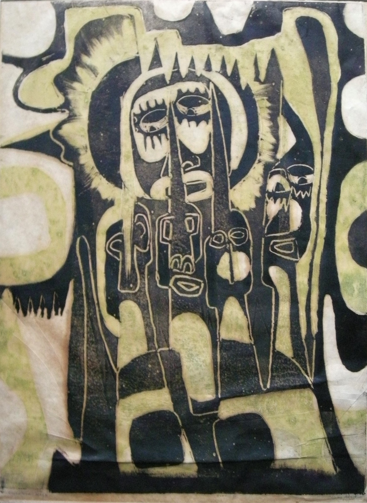

Yinka Adeyemi
B. 1945
Artist Biography
Yinka Adeyemi was born in Osun State, Nigeria, and participated in the historic Osogbo workshops led by Austrian artist Susanne Wenger in the early to mid-1960s. After an initial period with the Duro Ladipo Theatre, he shifted his focus entirely to the visual arts, developing a signature reputation for his batik paintings, printmaking, and bead paintings.
Adeyemi resided in Ile-Ife for around forty years, during which time he served as a cultural assistant and artist-in-residence at the University of Ife. In the early 2000s, he relocated to Oakland, California. His artwork has been featured extensively in solo and group exhibitions across Nigeria, wider Africa, Europe, and the United States.
From 2024 to 2025, Adeyemi’s prints were exhibited at the Smithsonian’s National Museum of African Art in Washington, D.C., as part of the major exhibition Bruce Onobrakpeya: The Mask and the Cross, where his work was highlighted alongside four of Onobrakpeya's leading contemporaries.
 Oba of Benin
Oba of Benin






